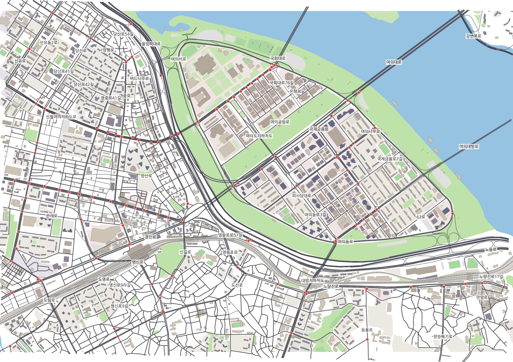
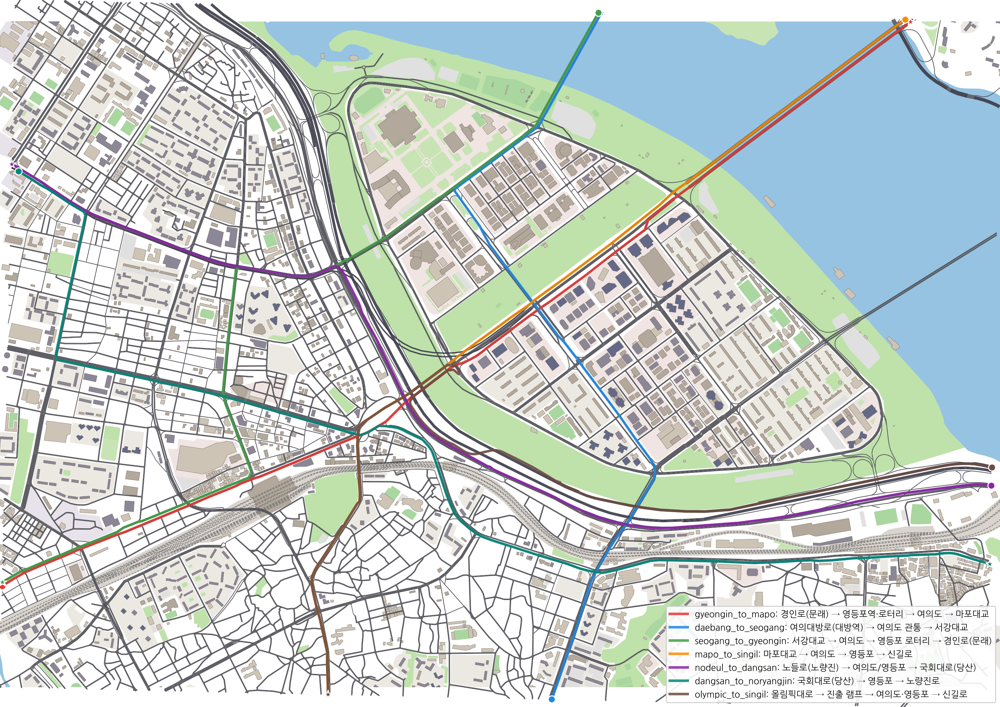

영등포 로터리부터 여의도까지,
실제 도시망을 달리는 자율주행 차량
서울 영등포·당산·여의도 일대(4.8 km × 3.4 km)를 OpenStreetMap에서 SUMO로 옮기고, 시간당 7,200대의 일반 차량 사이에서 자율주행 차량(AV)이 7개 실제 경로를 출발지부터 목적지까지 주행하도록 학습했습니다.
AI_sapiens · 자율주행 인공지능 및 제어 팀 프로젝트
–
AV 충돌률 (100 에피소드)
–
목적지 완주율
7,200
일반 차량 / 시간 (6종 컨트롤러)
107
신호교차로 (Webster + 녹색 연동)
1. 도로 선정 — 왜 영등포·여의도인가

| 구조 | 실제 위치 | AV 의사결정 |
|---|---|---|
| 로터리 → 평면 신호교차로 | 영등포 로터리 (OSM 11개 점 병합) | 다방향 진입 차량과 상충, 출구 차로 선택 |
| 교량 진입·진출 | 서울교 · 여의교 · 마포대교 · 서강대교 | 교량 끝 신호 직전 합류/분기, 차로 확보 |
| 도시고속도로 램프 | 올림픽대로 · 노들로 | 80 → 50 km/h 감속, 램프 합류 |
| 입체 교차 | 여의대방로 고가, 여의교·대방·여의도 지하차도 | 같은 도로명이라도 층이 다른 경로 |
| 다차로 간선 + 이면 격자 | 여의대로 · 경인로 · 국회대로 | 회전 전 차로 변경, 느린 차 추월, 신호 대기열 |
2. 도로 환경 구축
OSM → SUMO 파이프라인
- 영역 경계에서 도로를 정확히 잘라 경계 노드 생성
- 국내 제한속도(안전속도 5030, 올림픽대로 80), 등급별 기본 차로 수, 차로폭 3.2 m
- OSM 오류 보정(일방 way에 왕복 차로 수), 쪼개진 교차로 병합 5곳 — 고가 위 노드는 제외
- 신호 107곳: 간선×간선 방향별 동시신호, 보호 좌회전, 적색 우회전, Webster 주기 + 녹색 연동
- 고속 3차로를 가로지르는 비보호 좌회전 금지 (도로교통법: 비보호는 표지 설치 교차로만)
실제 도로 일치도 (OSM 대비)
- 도로 포함 97.8 % (빠진 부분은 영역 경계 조각)
- 선형 오차 중앙값 0.01 m · 99 % 4.8 m
- 차로 수 (OSM 태그 구간) 99.5 % 일치 · 제한속도 100 % 일치
- 층이 다른 도로를 평면 연결한 오류 0건
tools/fidelity_check.py 로 재현. 차로 수 태그가 없는 간선은 등급별 추정값.

3. 일반 차량(HV)과 시뮬레이션 안정성
Krauss 32 % · IDM 28 % · EIDM 20 % · ACC 12 % · 버스 5 % · 트럭 3 %. 경계 가중 randomTrips 로 7,200대/h를 투입하고, 60초마다 실시간 통행시간으로 경로를 다시 고르는 동적 재경로(내비게이션 운전자)를 적용했습니다.
| 단계 (80분 시뮬레이션) | 수요(대/h) | 텔레포트 | 종료 시 잔류 | 평균속도 |
|---|---|---|---|---|
| 초기 (OSM 그대로) | 6,546 | 158* | – | – |
| 교차로 병합 + Webster 신호 | 6,546 | 255 | 342 | 17.8 km/h |
| + 동적 재경로 | 6,546 | 28 | 0 | 26.6 km/h |
| + 보호좌회전·고속 비보호 금지·신호 지정 (최종) | 7,200 | 28 | 2 | 25.7 km/h |
* 초기값은 30분 구간. 텔레포트 = 180초 이상 움직이지 못해 SUMO가 강제 이동시킨 차량.
4. AV 문제 정의 (POMDP)
관측 44차원
- 수업 31차원: 내 속도, 5개 차선 선·후행 거리/상대속도, 차선별 밀도
- 차선별 경로 지속 거리 — 회전 전에 어느 차선에 있어야 하는지
- 다음 신호 거리·상태·남은 시간, 다음 교차로 거리·우선권
- 필요 차선 변경 수·남은 거리, 제한속도(현재/다음), 진행률, TTC 위험도
- 교차로 안에 갇힌 교차 차량을 '정지 장애물'로 인식
행동 · 보상
- 행동: [가감속, 차선변경 {-1,0,+1}] (수업과 동일)
- 추돌 회피·속도 선택·재량 차선변경은 정책이, 신호·교차로 우선권은 SUMO 법규 계층이 담당
- 보상: 속도·진행 + / 근접·TTC·급가감속·불필요 정지 − / 충돌 −10 · 도착 +5 · 교착 −5
- 안전 필터: 앞 장애물이 급정거해도 멈출 수 있는 속도로만 제한 (개입률 보고)
5. 학습
규칙 기반 전문가(IDM + 신호 정지 + 추월)로 데이터를 모아 BC를 학습하고, 같은 데이터로 수업 PPO의 하이브리드 정책(가감속 Normal + 차선 Categorical)을 초기화한 뒤 PPO로 미세조정했습니다.
6. 결과
| 정책 | 충돌률 | 완주율 | 평균 통행시간 | 평균속도 |
|---|
7. 주행 영상
8. 데이터셋
수업 collect_pomdp_data.py 기본 항목을 모두 포함하고, 경로 id·교착·안전필터 개입·진행률, ego 절대 위치(경위도)·도로명·제한속도·다음 신호, 반경 150 m 주변 차량(타입 포함)을 추가했습니다.
9. 문제와 해결
| 문제 | 원인 | 해결 |
|---|---|---|
| 로터리·교량 끝 교착 | OSM에서 한 교차로가 2~11개 점으로 쪼개져 교차로 안에서 다시 신호 대기 | 교차로 병합 5곳 (고가 위 노드는 제외) |
| 고가 차량이 평면 신호를 받음 | 반경 병합이 여의대방로 고가의 램프 합류점까지 포함 | 층(layer) 검사로 입체 노드 병합 제외 → 충돌 7→2 |
| 국회대로·로터리 접근 과포화 | 고정 최단경로로 모든 차가 같은 간선에 몰림 | 60초 동적 재경로 → 텔레포트 255→28, 잔류 342→0 |
| 연쇄 충돌 집계 | collision.action=warn 이 충돌 차량을 교차로에 남김 | remove 로 통일 |
| 노들로 좌회전 충돌 | 70 km/h 3차로를 가로지르는 비보호 좌회전 | 국내 법규 기준 고속 비보호 좌회전 금지 |
| AV가 교차로 안 갇힌 차량과 충돌 | SUMO의 교차로 상충 감속이 안전거리 비트에 묶여 있음 | getJunctionFoes로 상충 차량을 경로 장애물로 관측·필터에 반영 |
| 회전 관측 부족 | 수업 관측은 직선 고속도로용 | 경로 지속 거리·신호·교차로 관측 추가 |
| 고가 아래 차량을 장애물로 오인 | 2D 거리만 본 경로 장애물 검사 | 경로상 교차로·차로에 연결된 차량만 검사 (같은 평면) |
| PPO가 안전 필터에 의존 | 필터 켠 채 학습 → 필터 끄면 충돌률 7 % | 필터 없이 미세조정 (충돌 시 −10·종료로 직접 학습) |
| 신호 대기 중 미세 전진 추돌 | 연속 가속 정책의 정지 시 평균 출력이 0보다 약간 큼 → 0.1~0.6 km/h로 밀려 추돌 (필터 없는 충돌 10건 중 9건) | 정지 유지(오토홀드): 정지 중엔 분명한 출발 명령이 있어야 출발 → 필터 없이 충돌 10 % → 1 % |